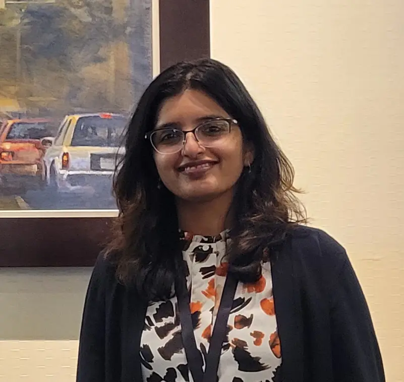

I am a PhD student at Stevens Institute of Technology, USA with the Cypress group co-advised by Dr. Georgios Portokalidis and Dr. Dave Naumann specializing in System Security. My research focuses on developing solutions for securing kernel and applications through system call filtering, as well as refining control-flow graphs of programs. My interests include program analysis, binary analysis, kernel security, reverse engineering, and developing secure and robust distributed systems, along with parallel programming.